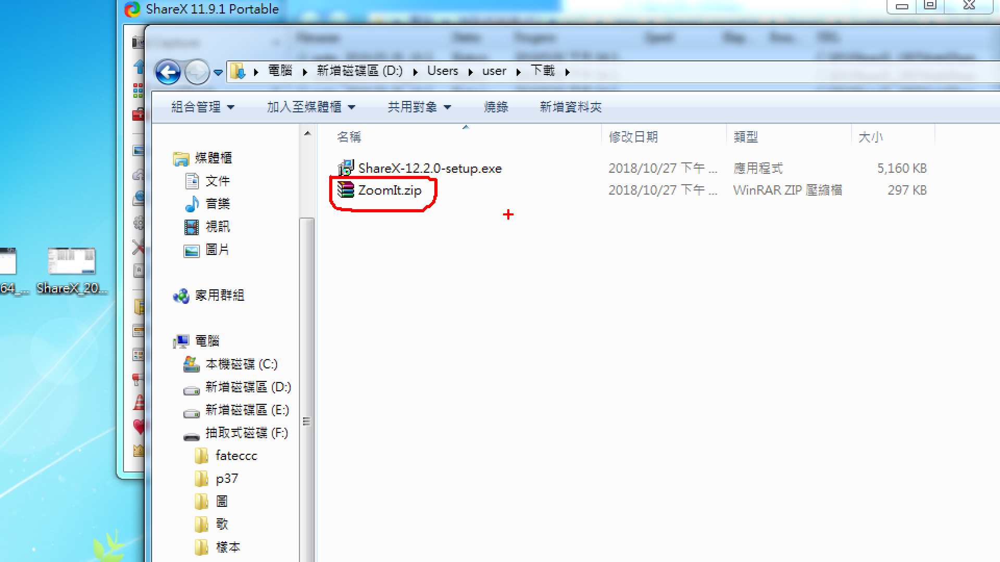

本周目標為領取個人期中作業及學習拍攝影片及輔助攝影軟體
基本程序:
1.下載ZoomIt以及ShareX
2.至https://classroom.github.com/a/wlLbt5TQ領取個人作業
3.管理期中倉儲內容
PS.本周流程較簡單因此以圖片的方式說明
在GOOGLE搜尋ShareX 點選第一個網站
進入網頁後點選Downlad下載安裝程式
下載完後點選程式進行安裝
安裝完後開啟程式的畫面
接著下載ZoomIt 一樣在GOOGLE搜尋ZoomIt點選第一個網頁
點選Download下載

下載好後為壓縮檔 將檔案解壓縮後打開ZoomIt程式
成功開啟後的設定畫面
接著進入https://classroom.github.com/a/wlLbt5TQ領取個人期中作業倉儲
上圖為已成功領取的畫面
最後按照Week1的步驟將期中作業倉儲git_clone至tmp裡進行管理
完成Week2的作業